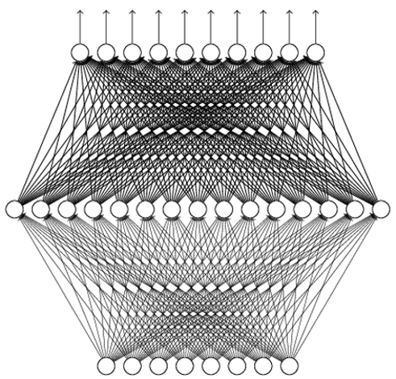

Maze has a discrete and small state space that we can deal with by an array.
However, for many cases the state space is continuous, or discrete but huge, array does not work.
Deep Value Network
Use a neural network to parameterize $Q$:
Input: state $s\in\bb{R}^n$
Output: each dimension for the value of an action $Q(s, a;\theta)$

Training Deep Q Network
Recall the Bellman optimality equation for action-value function:
\[
Q^*(s,a)=\bb{E}[R_{t+1}+\gamma \max_{a'}Q^*(S_{t+1}, a')|S_t=s, A_t=a]
\]
It is natural to build an optimization problem:
\[
L(\th)=\bb{E}_{\color{red}{(s,a,s')\sim Env}}[TD_{\th}(s,a,s')] \tag{TD loss}
\]
where $TD_{\th}(s,a,s')=\|Q_{\th}(s,a)-[R(s,a,s')+\gamma\max_{a'}Q_{\th}(s',a')]\|^2$.
Note: How to obtain the $Env$ distribution has many options!
It does not necessarily sample from the optimal policy.
A suboptimal, or even bad policy (e.g., random policy), may allow us to learn a good $Q$.
It is a cutting-edge research topic of studying how well we can do for non-optimal $Env$ distribution.
Replay Buffer
As in the previous Q-learning, we consider a routine that we take turns to
Sample certain transitions using the current $Q_{\th}$
Update $Q_{\th}$ by minimizing the TD loss
Exploration:
We use $\epsilon$-greedy strategy to sample transitions, and add $(s,a,s',r)$ in a replay buffer (e.g., maintained by FIFO).
Exploitation:
We sample a batch of transitions and train the network by gradient descent:
\[
\nabla_{\th}L(\th)=\bb{E}_{(s,a,s')\sim \rm{Replay Buffer}}[\nabla_{\th}TD_{\th}(s,a,s')]
\]
Deep Q-Learning Algorithm
Initialize the replay buffer $D$ and Q network $Q_{\th}$.
For every episode:
Sample the initial state $s_0\sim P(s_0)$
Repeat until the episode is over
Let $s$ be the current state
With prob. $\epsilon$ sample a random action $a$. Otherwise select $a=\arg\max_a Q_{\th}(s,a)$
Execute $a$ in the environment, and receive the reward $r$ and the next state $s'$
Add transitions $(s,a,s')$ in $D$
Sample a random batch from $D$ and build the batch TD loss
Perform one or a few gradient descent steps on the TD loss
Some Engineering Concerns about Deep $Q$-Learning
States and value network architecture
First of all, a good computer vision problem worth research.
Need to ensure that states are sufficient statistics for decision-making
Common practice: Stack a fixed number of frames (e.g., 4 frames) and pass through ConvNet
If long-term history is important, may use LSTM/GRU/Transformer/... to aggregate past history
May add other computing structures that are effective for video analysis, e.g., optical flow map
Not all vision layers can be applied without verification (e.g., batch normalization layer may be harmful)
Replay buffer
Replay buffer size matters.
When sampling from the replay buffer, relatively large batch size helps stabilizing training.
Some Theoretical Concerns about $Q$-Learning
Behavior/Target Network: Recall that
$TD_{\th}(s,a,s')=\|\color{blue}{Q_{\th}(s,a)}-[R(s,a,s')+\gamma\max_{a'}\color{red}{Q_{\th}(s',a')}]\|^2$. We keep two $Q$ networks in practice. We only update the blue network by gradient descent and use it to sample new trajectories. Every few episodes we replace the red one by the blue one. The reason is that the blue one changes too fast. The red one is called target network (to build target), and the blue one is called behavior network (to sample actions).
Value overestimation: Note that the TD loss takes the maximal $a$ for each $Q(s,\cdot)$. Since TD loss is not unbiased, the max operator will cause the $Q$-value to be overestimated! There are methods to mitigate (e.g., double Q-learning) or work around (e.g., advantage function) the issue.
Uncertainty of $Q$ estimation: Obviously, the $Q$ value at some $(s,a)$ are estimated from more samples, and should be more trustable. Those high $Q$ value with low confidence are quite detrimental to performance. Distributional Q-Learning quantifies the confidence of $Q$ and leverages the confidence to recalibrate target values and conduct exploration.
Theoretically, $Q$-learning (more precisely, a variation of it) is an optimal online learning algorithm for tabular RL.
Convergence of Reinforcement Learning Algorithms
We state the facts without proof:
Q-Learning:
Tabular setup: Guaranteed convergence to the optimal solution. A simple proof (using contraction mapping).
Value network setup: No convergence guarantee due to the approximation nature of networks.
Recall that a policy $\pi$ (assume its independent of step $t$) is just a function that maps from a state to a distribution over the action space.
The quality of $\pi$ is determined by $V^{\pi}(s_0)$, where $s_0$ is the initial state
Q: What if the initial state is a distribution?
We can parameterize $\pi$ by $\pi_{\theta}$, e.g.,
a neural network
a categorical distribution
First-Order Policy Optimization
Now we can formulate policy optimization as
\[
\begin{align}
\underset{\theta\in\Theta}{\text{maximize}}&&V^{\pi_{\theta}}(s_0).
\end{align}
\]
Sampling allows us to estimate values.
If sampling also allows us to estimate the gradient of values w.r.t. policy parameters $\frac{\partial V^{\pi_{\theta}}(s_0)}{\partial \theta}$, we can improve our policies!
Goal: Derivate a way to directly estimate the gradient $\frac{\partial V^{\pi_{\theta}}(s_0)}{\partial \theta}$ from samples.
Policy Gradient Theorem (Undiscounted)
By Bellman expectation equation,
\begin{align*}
V^{\pi_{\theta}}(s) &= \bb{E}_{\pi_{\theta}} [R_{t+1}+\gamma V_{\pi}(S_{t+1})|S_t=s]\\
&=\sum_{a}\pi_{\theta}(s, a)\cdot\mathbb{E}_{s'\sim T(s, a)}\left[r(s, a) + V^{\pi_{\theta}}(s')\right].
\end{align*}
Policy Gradient Theorem (Undiscounted):
\[
\nabla_{\theta}V^{\pi_{\theta}}(s_0)=\sum_{s}\sum_t^{\infty}\mu_t(s;s_0) \sum_{a}\nabla_{\theta}\pi_{\theta}(s, a) \cdot Q^{\pi_{\theta}}(s, a)
\]
where $\mu_t(s;s_0)$ is the average visitation frequency of the state $s$ in step $k$, and $\sum_s \mu_t(s;s_0)=1$.
Q: What is the intuitive interpretation from this equation?
Weighted sum of (log) policy gradients for all steps.
Higher weights for states with higher frequency.
Earlier steps has higher $Q$, thus higher weights.
Policy Gradient Theorem (Discounted)
Policy Gradient Theorem (Discounted):
\[
\nabla_{\th}V^{\pi_{\theta, \gamma}}(s_0) = \sum_s\sum_{t = 0}^{\infty}\gamma^t\mu_t(s;s_0) \sum_{a}\nabla_{\theta}\pi_{\theta}(s, a) \cdot Q^{\pi_{\theta}, \gamma}(s, a).
\]
$\mu_t(s;s_0)$ is the average visitation frequency of the state $s$ in step $k$.
Can you guess the influence of $\gamma$ in this result?
We will assume the discounted setting from now on.
Creating an Unbiased Estimate for PG
\[
\nabla_{\theta}V^{\pi_{\theta}, \gamma}(s_0) =\sum_{t = 0}^{\infty}\sum_s\gamma^t\mu_t(s;s_0) \sum_{a}\nabla_{\theta}\pi_{\theta}(s, a) \cdot Q^{\pi_{\theta}, \gamma}(s, a)
\]
Let's say we have used $\pi_{\theta}$ to collect a rollout trajectory $\left\{(s_t, a_t, r_t)\right\}_{t = 0}^{\infty}$, where $s_t, a_t, r_t$ are random variables. Note that
$\nabla_{\th} \ln \pi_{\th}=\frac{\nabla \pi_{\th}}{\pi_{\th}}\Rightarrow \nabla \pi_{\th}=\nabla_{\theta} \ln(\pi_{\th})\cdot\pi_{\th}$
\begin{align*}
\nabla_{\theta}V^{\pi_{\theta}, \gamma}(s_0)&= \sum_s\sum_{t = 0}^{\infty}\gamma^t\mu_t(s;s_0)\sum_{a}\nabla_{\theta}\ln\left(\pi_{\theta}(s, a)\right) \cdot \pi_{\theta}(s, a) Q^{\pi_{\theta}, \gamma}(s, a)\\
\text{(absorb randomness of env. in $\mu_t$)} &=\mathbb{E}\left[\sum_{t = 0}^{\infty}\gamma^t\sum_{a}\nabla_{\theta}\ln\left(\pi_{\theta}(s_t, a)\right)\cdot\pi_{\theta}(s_t, a)Q^{\pi_{\theta}, \gamma}(s_t, a)\right]\\
\text{(absorb randomness of action in $\pi_{\th}$)}&=\mathbb{E}\left[\sum_{t = 0}^{\infty}\gamma^t\nabla_{\theta}\ln\left(\pi_{\theta}(s_t, a_t)\right)\cdot Q^{\pi_{\theta}, \gamma}(s_t, a_t)\right]\\
&=\mathbb{E}\left[\sum_{t = 0}^{\infty}\gamma^t\nabla_{\theta}\ln\left(\pi_{\theta}(s_t, a_t)\right)\cdot \sum_{i = t}^{\infty} \gamma^{i - k}\cdot r_i\right]\\
\end{align*}
Creating an Unbiased Estimate for PG (Cont'd)
We have shown that
\begin{align*}
\nabla_{\theta}V^{\pi_{\theta}, \gamma}(s_0)=\mathbb{E}\left[\sum_{t = 0}^{\infty}\gamma^t\nabla_{\theta}\ln\left(\pi_{\theta}(s_t, a_t)\right)\cdot \sum_{i = t}^{\infty} \gamma^{i - t}\cdot r_i\right]\\
\end{align*}
Using more trajectories, we can get more accurate gradient estimate (smaller variance)
Since the unbiased estimate is a summation, we can sample from the individual terms to do batched gradient descent
We have established an MC sampling based method to estimate the gradient of value w.r.t. policy parameters!
This estimate is unbiased.
In literature, this MC-sampling based policy gradient method is called REINFORCE.